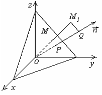

5.2.5. Расстояние от
точки до плоскости
Отклонением точки
от плоскости называется число,
равное длине перпендикуляра, опущенного из точки  на
плоскость, взятое со знаком «-», если точка и
начало координат находятся по одну сторону от плоскости, и со знаком «+», если
по разные стороны.
на
плоскость, взятое со знаком «-», если точка и
начало координат находятся по одну сторону от плоскости, и со знаком «+», если
по разные стороны.
на
плоскость, взятое со знаком «-», если точка и
начало координат находятся по одну сторону от плоскости, и со знаком «+», если
по разные стороны.Пусть дана точка . Спроектируем
точку на нормаль к плоскости
на нормаль к плоскости Отклонение
,
.

Таким образом, чтобы найти отклонение какой-либо точки от
плоскости, нужно в левую часть нормального уравнения этой плоскости подставить
координаты точки.
Если плоскость задана общим уравнением, то отклонение
точки от плоскости вычисляется
по формуле
.
Расстояние от точки до
плоскости:
Расстояние
от точки до плоскости
Найти расстояние от точки до
плоскости .